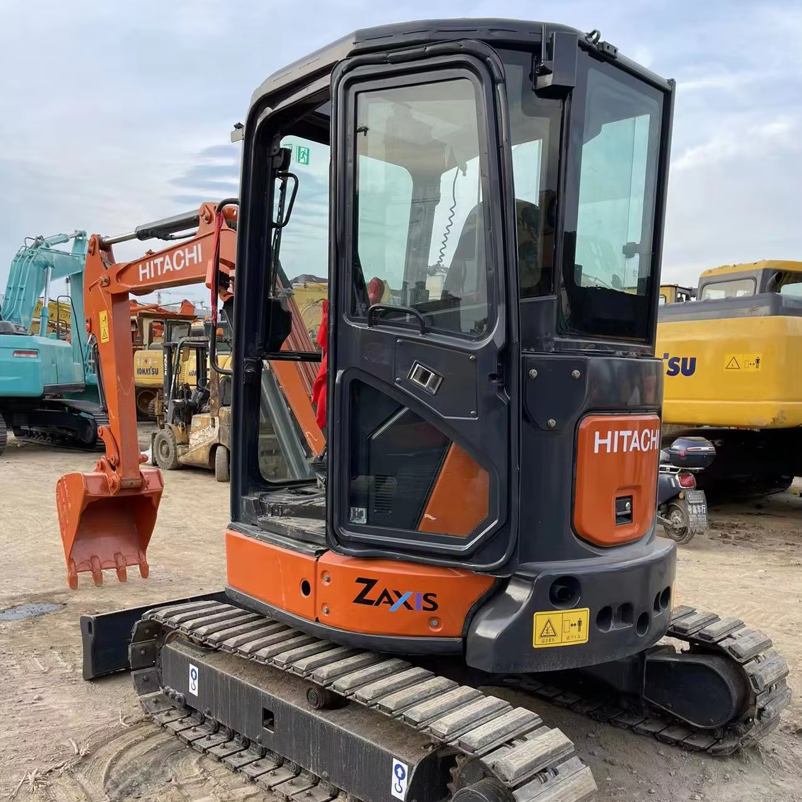

Refurbished Hitachi Zaxis 35 Excavator
The Hitachi Zaxis 35 Excavator is a compact and efficient machine designed for small to medium-sized projects that require precision, fuel efficiency, and power. Whether you're working in construction, landscaping, or material handling, the Zaxis 35 offers the perfect balance of performance and maneuverability for confined spaces. Known for its durability, smooth operation, and versatility, the Zaxis 35 excels in environments where larger machines cannot operate effectively. Opting for a refurbished Zaxis 35 provides the same performance as a new model, but at a significantly lower price, making it a cost-effective solution for businesses and contractors.
Honestly, it's almost impossible to buy a brand new excavator from China. They either don't exist or are made in China. If a Chinese seller tells you their Caterpillar/Komatsu/Volvo/Kobelco/Hitachi is brand new, they're lying. Therefore, a refurbished excavator is your best bet.

Here are the detailed specifications for a refurbished Hitachi Zaxis 35 excavator (ZX35U-5 or ZX35U-3)—perfect for your technical documentation and comparative spec work:
Operating Weight and Dimensions
- Operating Weight: ~3,500–3,800 kg
- Transport Length: ~4.75 meters
- Transport Width: ~1.74 meters
- Transport Height: ~2.45 meters
- Tail Swing Radius: ~1.2 meters (zero tail swing design)
- Track Width: 300–350 mm standard
- Undercarriage: Fixed gauge, rubber or steel tracks
Engine and Powertrain
- Engine Model: Yanmar 3TNV88 or Isuzu 3-cylinder diesel (Tier 3 compliant)
- Rated Power Output: ~21.2–21.5 kW (28.4–28.8 hp) @ 2,400 rpm
- Fuel Tank Capacity: ~45–50 liters
- Travel Speed:
- Low: ~2.2 km/h
- High: ~4.0 km/h
- Swing Speed: ~9.0 rpm
- Drive Type: Hydrostatic with planetary final drives
Hydraulic System
- Main Pump Type: Load-sensing axial piston pumps
- Flow Rate: ~2 × 60–70 L/min
- System Pressure: Up to 21–24 MPa
- Hydraulic Oil Capacity: ~45–55 liters
- Efficiency Features:
- Boom/swing priority
- Regeneration circuits
- Auto hydraulic warm-up
- Fuel-saving ECO mode
Performance Metrics
- Bucket Capacity: ~0.11–0.14 m³ (SAE heaped)
- Max Digging Depth: ~2.9–3.2 meters
- Max Reach (Horizontal): ~5.0–5.3 meters
- Max Dump Height: ~3.2–3.5 meters
- Bucket Digging Force: ~30–32 kN
- Arm Digging Force: ~18–20 kN
Cab and Operator Features
- Cab Type: ROPS-certified enclosed cab or canopy
- Display: Basic LCD monitor or analog gauges
- Controls: Pilot-operated joysticks with auxiliary hydraulic circuit
- Comfort: Adjustable seat, optional HVAC
- Visibility: Wide glass area, LED work lights
Attachments Compatibility
- Standard Bucket: ~0.12 m³
- Optional Tools: Hydraulic breaker, auger, compactor, ripper
- Quick Coupler: Manual or hydraulic options available
- Dozer Blade: Standard for grading and stability
Refurbishment Scope
Refurbished ZX35 units typically include:
- Engine Overhaul: Cylinder head, injectors, cooling system
- Hydraulic Restoration: Pump recalibration, valve block testing, hose replacement
- Electrical Diagnostics: Monitor, sensors, wiring harness
- Cab Reconditioning: Seat, joysticks, HVAC, repainting
- Structural Repairs: Boom/bucket welding, bushing replacement, undercarriage rebuild
Overview of the Hitachi Zaxis 35 Excavator
The Hitachi Zaxis 35 is a small, tracked hydraulic excavator designed for a range of applications. Despite its compact size, it delivers excellent digging depth and reach, making it ideal for trenching, material handling, grading, and even demolition in tight or restricted spaces. Refurbished units go through a thorough inspection and reconditioning process to replace worn parts with genuine Hitachi components, ensuring that the machine performs like new while providing a cost-effective solution for businesses.
Key Specifications of the Hitachi Zaxis 35 Excavator
The Zaxis 35 is designed to offer high efficiency and performance, combining compact dimensions with powerful hydraulics. Here are the key specifications:
-
Operating Weight: Approximately 3,500 - 4,000 kg (7,716 - 8,818 lbs)
-
Engine Power: 35 hp (26 kW)
-
Max Digging Depth: Up to 3.5 meters (11.5 feet)
-
Maximum Reach: 5.3 meters (17.4 feet)
-
Bucket Capacity: Typically 0.2 - 0.3 cubic meters (7.1 - 10.6 cubic feet)
-
Fuel Tank Capacity: Around 50 - 70 liters (13 - 18 gallons)
-
Travel Speed: Up to 4.5 km/h (2.8 mph)
These specifications provide the Zaxis 35 with the versatility to perform tasks like digging trenches, lifting materials, and grading, all while maintaining a small footprint that allows it to work in cramped areas where larger excavators cannot.
Performance and Efficiency of the Zaxis 35
The Zaxis 35 combines an efficient hydraulic system with a powerful engine, offering high performance and excellent fuel efficiency. Its compact size doesn’t limit its ability to handle demanding tasks, making it a reliable machine for various applications.
Performance Highlights:
-
Efficient Hydraulic System: The Zaxis 35 is equipped with a highly efficient hydraulic system that offers smooth, precise control of the boom, arm, and bucket. This system ensures faster cycle times and improves productivity, especially when handling heavy loads or working in tight spaces.
-
Fuel Efficiency: One of the standout features of the Zaxis 35 is its fuel-efficient engine. Designed to reduce fuel consumption without sacrificing power, this engine helps businesses reduce operational costs while maintaining high levels of productivity.
-
Compact but Powerful: Despite its small size, the Zaxis 35 delivers impressive digging depth and reach, making it perfect for tasks that require precision, such as trenching, grading, and material handling. Its compact design allows it to maneuver easily in confined spaces.
-
Responsive Operator Control: The Zaxis 35 is designed to provide precise control, making it easier for operators to perform accurate tasks, whether they’re digging narrow trenches or handling delicate materials. The machine’s intuitive control system ensures ease of use and operator comfort.
Durability and Longevity of the Zaxis 35
As with all Hitachi equipment, the Zaxis 35 is built for durability. Its construction and engineering are designed to handle the demands of tough job sites and deliver reliable performance over the long term.
Durability Features:
-
Strong Undercarriage: The undercarriage of the Zaxis 35 is built to last, designed to handle rough terrains and heavy workloads. The tracks, sprockets, and rollers are made from high-quality materials, ensuring extended service life and minimal downtime.
-
Long-Lasting Engine: Powered by a dependable engine, the Zaxis 35 is designed to withstand the rigors of demanding tasks. With proper maintenance, the engine can provide thousands of hours of reliable operation, making it a long-term investment.
-
Reliable Hydraulic System: The hydraulic system of the Zaxis 35 is engineered for durability. Built to handle high-pressure tasks, the system minimizes downtime and ensures the excavator operates efficiently for years.
Comfort and Safety of the Zaxis 35
The Zaxis 35 prioritizes operator comfort and safety. Designed with an ergonomic cabin and advanced safety features, this machine provides a safe and comfortable working environment for long shifts.
Comfort and Safety Features:
-
Spacious Cabin: The Zaxis 35 offers a well-designed cabin with adjustable seating and easy-to-use controls. This provides the operator with excellent visibility and comfort, reducing fatigue during extended periods of operation.
-
Noise and Vibration Reduction: The cabin is equipped with noise and vibration reduction technology to enhance operator comfort. This helps to reduce operator fatigue, especially when working in noisy environments for long hours.
-
Safety Features: The Zaxis 35 comes with Roll Over Protection (ROPS) and Falling Object Protection (FOPS), which enhance the operator's safety in hazardous working environments. Additionally, the excavator’s low center of gravity improves stability, reducing the risk of tipping when operating on uneven or sloped terrain.
Versatility and Attachments for the Zaxis 35
The Zaxis 35 is a highly versatile machine that can be fitted with a variety of attachments, making it suitable for various tasks across different industries. Whether you need to dig, grade, or lift, the Zaxis 35 can be customized to meet your specific needs.
Common Attachments for the Zaxis 35:
-
Buckets: The Zaxis 35 can be equipped with general-purpose or heavy-duty buckets, typically ranging from 0.2 to 0.3 cubic meters (7.1 - 10.6 cubic feet). These are ideal for excavation, grading, and material handling.
-
Hydraulic Breakers: For demolition tasks, the Zaxis 35 can be fitted with a hydraulic breaker. This attachment allows the excavator to break concrete, rock, and other hard materials, making it ideal for construction and demolition applications.
-
Augers: Auger attachments are perfect for drilling deep, narrow holes, such as those needed for foundations or posts.
-
Grapples: The Zaxis 35 can be equipped with grapples for handling materials like logs, scrap metal, or debris, improving efficiency in material transport tasks.
-
Quick Couplers: Quick couplers allow operators to rapidly change between different attachments, reducing downtime and improving overall operational efficiency.
Benefits of Purchasing a Refurbished Hitachi Zaxis 35 Excavator
Opting for a refurbished Zaxis 35 offers several advantages, particularly for businesses that need a reliable machine but are working within a budget.
Key Benefits:
-
Cost Savings: Refurbished Zaxis 35 machines are significantly more affordable than new models. Refurbishing brings the machine back to near-new condition with genuine Hitachi parts, offering the same high performance at a fraction of the cost.
-
Thorough Reconditioning: Refurbished units undergo a detailed inspection and reconditioning process, where worn parts are replaced and the machine is restored to factory specifications. This ensures reliability and performance comparable to a new model.
-
Warranty: Many refurbished Zaxis 35 machines come with a warranty, offering peace of mind in case of unexpected mechanical issues after purchase.
-
Sustainability: Purchasing refurbished equipment is an environmentally friendly option. It reduces waste and extends the life of existing machinery, contributing to sustainability in the heavy equipment industry.
Maintenance Tips for the Hitachi Zaxis 35 Excavator
Proper maintenance is essential to ensuring the Zaxis 35 performs at its best over the long term. Here are some key maintenance tips:
Maintenance Recommendations:
-
Engine Maintenance: Regularly check and change the engine oil, replace air filters, and monitor coolant levels to ensure optimal engine performance and prevent overheating.
-
Hydraulic System: Inspect hydraulic hoses for leaks and replace hydraulic filters as needed. Maintaining the hydraulic system in good condition ensures smooth and efficient operation.
-
Undercarriage: Regularly inspect the undercarriage, including tracks, sprockets, and rollers, for wear. Replace damaged parts in a timely manner to prevent further damage and keep the machine operating smoothly.
-
Attachments: Inspect and maintain attachments like buckets and grapples for wear and tear. Replace or repair damaged parts to maintain functionality.
Conclusion
The Hitachi Zaxis 35 Excavator is a compact, efficient, and versatile machine that delivers outstanding performance for a wide variety of tasks. Whether you're working in construction, landscaping, or material handling, the Zaxis 35 provides the power and precision you need to get the job done. A refurbished Zaxis 35 offers an affordable alternative to purchasing a new unit, with the same high-quality performance and reliability. With proper maintenance, the Zaxis 35 will continue to serve you for many years, making it a valuable addition to any fleet.
Our Commitment
- 2 years / 4000 hours warranty.
- EPA certified.
- No sweatshop labor.
Contacts

- [email protected]
- Youtube Instagram Facebook
- Navigation: G206 (Sishu Bridge) in Changfeng County, Hefei City, Anhui Province, 200 meters north to the east